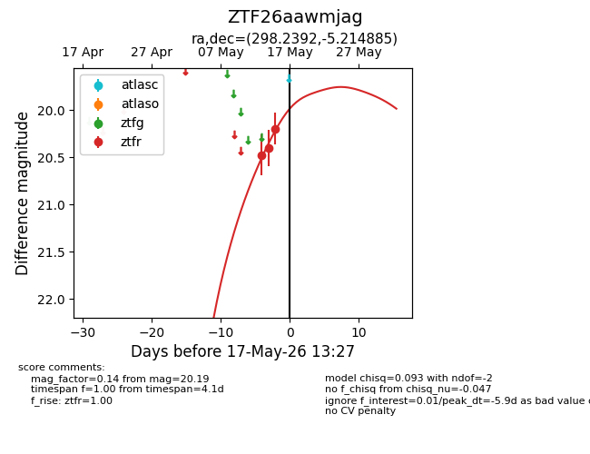
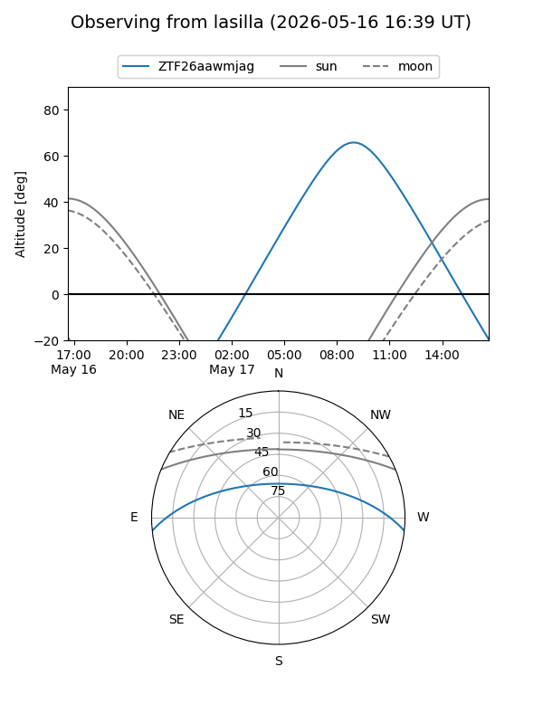
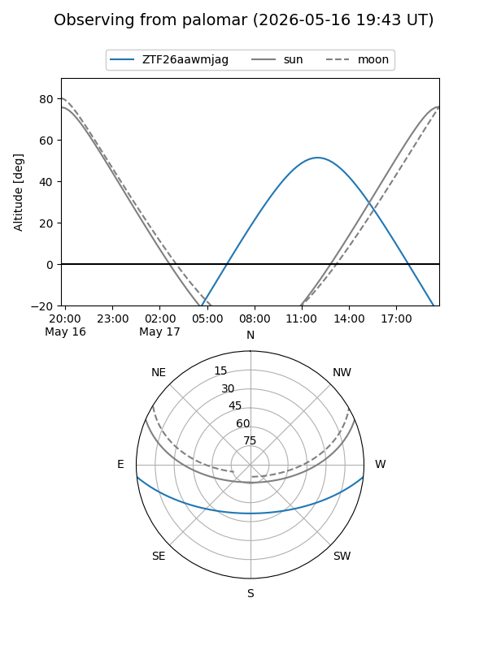
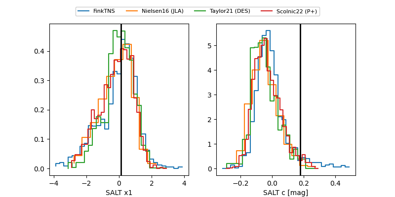

ZTF26aawmjag
Target ZTF26aawmjag at 2026-05-17 13:34
Aliases and brokers:
FINK: link
Lasair: link
ALeRCE: link
alt names
ZTF26aawmjag (ztf,fink_ztf)
Coordinates:
equatorial (ra, dec) = 298.2392,-5.21488
equatorial (HMS+DMS) = 19:52:57.42,-05:12:53.59
galactic (l, b) = (35.2900,-16.05181)
Flags:
Photometry:
last ztfr=20.19
3 ztfr detections
Lightcurve

Visibility


Additional plots
